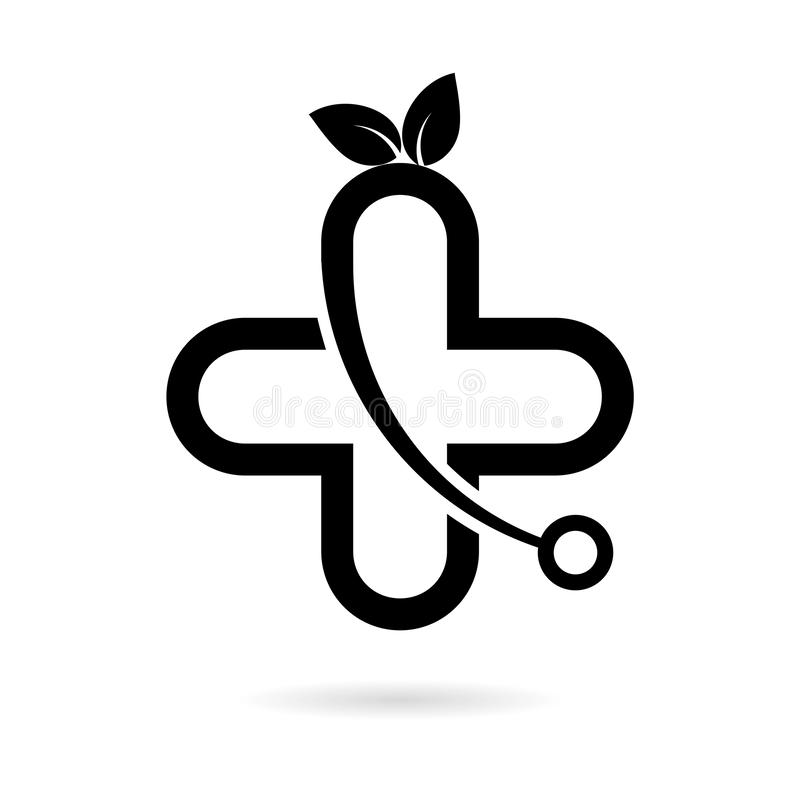
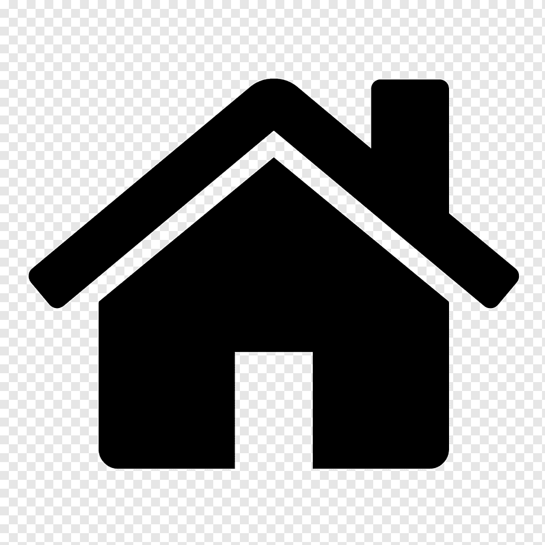

<section id="homePrestations" class="text-center">
  <div class="row mt-5 mb-5">
    <div class="col-sm mt-5 mb-5" data-aos="fade-up">
      
      <h4>Educación</h4>
      <p>
        Garantizar un derecho constitucional escencial como lo es la Educación
        respetando lo que reza la 26.206 en su art 11, 53,54 los convenios
        internacionales y su identidad étnica.
      </p>
    </div>
    <div class="col-sm mt-5 mb-5" data-aos="fade-up">
      
      <h4>Salud</h4>
      <p>
        Salud mediante la fusión de las dos medicinas la occidental y la ancestral,
        ensamblando las dos prácticas como el hospital Mapuche.
      </p>
    </div>
    <div class="col-sm mt-5 mb-5" data-aos="fade-up">
      
      <h4>Vivienda</h4>
      <p>
        Respetar su cultura y cosmovisión, pero garantizar dignidad en su estilo
        de vida respetando su Teko Pora, estar en armonía con la naturaleza,su
        espiritualidad y la Tekoa.
      </p>
    </div>
  </div>
</section>
